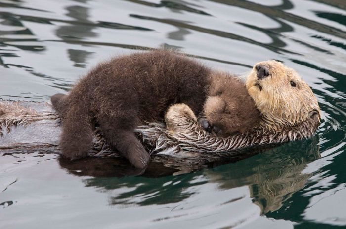

What's so fun about otters?
Fun Fact #1
Thirteen different species of otter exist all around the world. Some are small river otters, and some are bigger sea otters.
Fun Fact #2
90% of all sea otters live on the coast of Alaska.
Fun Fact #3
They're hungry animals! Sea otters eat 25% of their body weight in food every day.
Fun Fact #4
They like to eat sea urchins, clams, mussels and crabs. They use their sea whiskers to find small creatures to eat, and their paws to dig for clams.
Fun Fact #5
Clever creatures, they'll use rocks to crack open the clams. They carry rocks and store food in the loose skin under their armpits - who needs carrier bags!
Fun Fact #6
Unlike most marine mammals, they don't have a layer of blubber. But, they do have the thickest fur of all animals.
Fun Fact #7
Surprise! No fact here, just a really cute picture of two otters cuddling. Try clicking it! 
Fun Fact #8
Baby otters are called pups. Newborn pups need lots of attention, and will stay close to their mum's until they've developed enough skills to go it alone - usually at 6 months.
Fun Fact #9
An otter pup's fur is too dense for it to swim underwater. So, their mother leaves them floating while she searches for food, until their adult fur grows in.
Fun Fact #10
Don't challenge an otter to a holding-your-breath competition! Sea otters can stay underwater for 5 minutes, and river otters can hold their breath for even longer - 8 minutes!
Fun Fact #11
Otters like to stick together, so when they sleep they will wrap themselves in seaweed and float together in a group. A group of resting otters is called a raft. We wouldn't go drifting away on one of these rafts, however! Otters have a nasty bite!
Source
What's more fun than giving credit? These fun facts were provided by: https://www.jojomamanbebe.co.uk/littleextras/news/10-fun-facts-otters/